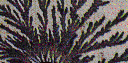

Fractals appear in the world both as objects and as time records of processes. Practically every example observed involves what appears to be some element of randomness, perhaps due to the interactions of very many small parts of the process. Think of the complicated interaction of hydrodynamical and geological forces scuplting a fractal coastline, or of the thousands of economic agents driving the stock market. Here we invstrigate random fractals, look at various statistical properties they possess, note how they appear in a huge variety of settings (from bacteria colonies to clusters of galaxies), and investigate a new family of very simple random cartoons that can be fine-tuned to exhibit a variety of statistical properties.
Some useful ideas from basic probability: expected value, standard deviation, and normal distribution.
| Self-Similar Distributions A simple way to add some randomness to fractal constructions. | |
| Statistical Self-Similarity Another way to add some randomness to fractal constructions. | |
| Brownian Motion The dance of pollen grains in a water drop, observed by Robert Brown in 1827 and explained by Albert Einstein in 1905 as the effect of individual water molecules hitting the pollen. Five years before Einstein, Louis Bachelier used the same ideas as a model of the stock market. | |
| Consecutive steps in Brownian motion are independent of one another. While this seems to model some physical processes well, history is important for others. Fractional Brownian Motion is a generalization of Brownian motion to include memory. | |
| A criticism of fractional Brownian motion is that the steps still follow the normal distribution, so large events are very rare. Levy flights are random processes in which large steps are much more likely. But in these processes, each step is independent of those before it. | |
| Diffusion-Limited Aggregation (DLA) is a growth model in which cohesive particles follow Brownian motion paths (the "diffusion" of the name) through a medium until they encounter one another and stick. The clusters exhibit hierarchical branching, but the statistics of large clusters is subtle and not yet completely understood. | |
| What do coffee and the distribution of galaxies have in common? Percolation is a model consisting of cells in a lattice that randomly take one of two states, say red and blue. If the probability of blue is high enough, blue clusters span the lattice. That is, blue flows (percolates) through the lattice. | |
| Bacterial Growth in Stressed Environments Growing bacteria on media depleted of nutrient often yields colonies resembling DLA clusters. The colony growth is limited by the nutrient diffusing in from the edge of the media, so this is no surprise. But some propose another model: the colony shape is the result of communication among the bacteria. |  |
| Large-Scale Distribution of Galaxies Over some range of distances, the distribution of galaxies in the universe is lumpy and clumpy: clusters, superclusters, strings, walls, huge voids. Does the entire universe exhibit this fractal structure? Is it a result of the precise conditions of the Big Bang, or a natural consequence of the expansion that followed? | |
| The Fractal Nature of Internet Traffic The statistics of voice traffic is well-understood and phone networks are designed to handle the peak demands. Internet traffic is fundamentally different in form: the statistics appear to be fractal, imposing different design conditions than for voice traffic. | |
| Random Fractal Cartoons Surprisingly simple cartoons can capture both the dependence on history of fractional Brownian motion, and the prevelance of large steps of Levy flights. | |
| These cartoons provide remarkably good surrogates of the stock market. Even experienced brokers cannot distinguish real data from fakes generated by the cartoons. Moreover, careful study of the cartoons reveals a way to disentangle the effects of history and big jumps, by rescaling time. |